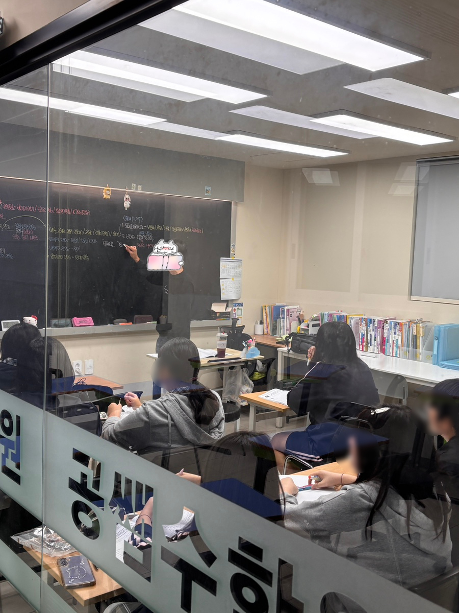
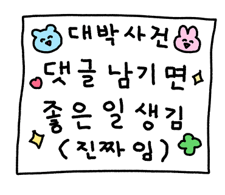

안녕하세요 공쌤수학원입니다

이번 중3 정기고사를 앞두고
공쌤수학원에서 국어 선생님을 초빙하여
학교별 국어 무료 특강을 진행했습니다!!

왜 국어 특강을 열었을까요?
중3 정기고사는 고등학교 진학 전 마지막 내신 시험입니다
물론 수학도 중요하지만
전 과목을 고르게 챙기는 것이 중요한 시기예요
특히 국어는 학교마다 교과서와 출제 스타일이 달라
혼자 공부하기 어려워하는 학생이 많습니다
그래서 공쌤수학원에서 학생들이 시험 직전에 꼭 짚어야 할 부분을
학교별로 나누어 정리해 주는 시간을 마련했습니다!



꼭 공쌤수학원생이 아니어도 중3 친구들이라면
참여가 가능한 특강이었는데요~
각 학교 교과서 범위에 맞춘 핵심 작품과 문법 정리여서 그런지
학생들의 집중력이 정말 대단했습니다.

시험 직전이라 부담이 큰 시기인데도
끝까지 열심히 참여해 준 학생들에게 고맙고
이번 정기고사에서 좋은 결과 있기를 응원합니다!
공쌤수학원은 수학 수업뿐 아니라
학생들의 내신 전체를 함께 고민하는 학원이 되겠습니다.
앞으로도 시험 대비 특강 소식이 있으면
블로그로 안내해 드리겠습니다
항상 감사합니다
학습상담
051-913-7159
010-7419-7159

#부암역학원, #당감동학원, #부전동학원, #근처수학학원, #근처수학학원추천, #학원, #수학학원, #초등수학학원, #중등수학학원, #고등수학학원, #중등수학학원비, #초등수학학원비, #고등수학학원비, #학원장학금, #공쌤수학원, #공쌤수학, #부산학원, #부산학원추천, #서면학원추천, #전포학원추천, #부전동수학학원, #부암학원 #덕명여중 #진여중 #진중 #개성중 #항도중 #부전초 #성지초 #부암초 #부산진초 #선암초 #진중 #서면중 #가야여중 #광무여중 #동고 #동성고 #개금고 #개성고 #가야고 #진고 #진여고 #데레사고 #성모여고 #한얼고 #마케팅고 #주례여고 #문현여고 #공쌤수학원자습실 #일대일학습 #일대일맞춤학습 #서술형대비 #중간고사 #기말고사 #중3정기고사 #중학교내신 #중3국어 #중등국어
네이버 블로그 원문 ↗


 여름방학 이벤트 추첨 영상 보기 ↗
여름방학 이벤트 추첨 영상 보기 ↗


![[공쌤장학금 수여식] 중1 단원평가 1등 사진 1](imges/students/224369893942-01.jpg)
![[공쌤장학금 수여식] 중1 단원평가 1등 사진 2](imges/students/224369893942-02.jpg)


![[공쌤장학금 수여식] 중1 단원평가 1등 사진 1](imges/students/224369885381-01.jpg)

![[공쌤장학금 수여식] 26년 1학기 기말고사 사진 1](imges/students/224369881711-01.jpg)
![[공쌤장학금 수여식] 26년 1학기 기말고사 사진 2](imges/students/224369881711-02.jpg)


![[공쌤장학금 수여식] 26년 1학기 중간고사 사진 1](imges/students/224289502963-01.jpg)
![[공쌤장학금 수여식] 26년 1학기 중간고사 사진 2](imges/students/224289502963-02.jpg)